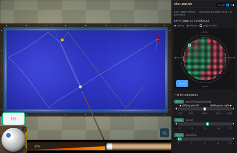
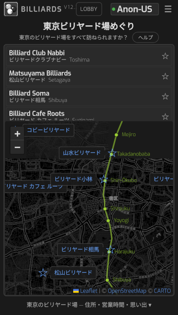

3クッション スリークッション・キャロム
手玉を3回以上クッションに当ててから、2つの的球に当てれば得点です。 押し球や引き球、捻り（横回転）のかかり方まで、物理演算で計算して います。
無料 · 登録不要 · 今すぐプレイ
インストールも会員登録も要りません。ブラウザでページを開けば、すぐに 撞けます。3クッション、9ボール、8ボール、四つ玉、スヌーカー。どれも 実際の球の動きを再現する物理エンジンで動いています。オンラインで 対戦相手を探すことも、ボット相手に一人で撞くこともできます。
PC・スマートフォン対応 マウス・タッチ操作 オンライン対戦

種目
3クッションと四つ玉のキャロム、9ボールと8ボールのポケット、それに スヌーカー。どれも無料で遊べます。
手玉を3回以上クッションに当ててから、2つの的球に当てれば得点です。 押し球や引き球、捻り（横回転）のかかり方まで、物理演算で計算して います。
番号の小さい球から順に当てていきます。9番をポケットに入れれば 勝ちです。球の転がりは、実際の台をもとに計算しています。
ソリッド（1〜7番）とストライプ（9〜15番）に分かれ、自分の組を すべて落としたら、最後に8番をポケットに入れれば勝ちです。自分の組は、 最初に落とした球で決まります。
日本のビリヤード場で長く親しまれてきた種目で、手玉2つと赤球2つを 使います。自分の手玉を赤球2つに当てると1点。最後の1点は、3回以上 クッションに当ててから当てる決まりです。
12フィートの台に赤球が15個。赤球とカラーボールを交互に落として得点を 重ねます。ポケットが狭く球も小さいので、狙いの精度がそのまま結果に 出ます。
3クッション・キャロムビリヤード
スピンのかかり方、薄い当たり、クッションの反発まで、物理エンジンで 計算しています。ブラウザを開けば、そのままスリークッションを撞けます。
初めての方は、小さい台の練習モードで感覚をつかんでから、通常サイズの 台へどうぞ。狙い・撞点・力加減の分析は ショット分析 で確認できます。
オンライン対戦
オンラインロビーで対戦相手を探して、すぐにゲームを始めましょう。プレイヤーが 少ない時間帯でも、ボットとの練習対戦が楽しめます。
オンラインロビーには、いま接続しているプレイヤーが並びます。気になる相手を選んで 対戦を申し込んでください。1試合が終わったら、別の相手と続けて対戦できます。 3クッションでも9ボールでも、ロビーは同じです。
オンラインロビーに入る特徴
球の回転やクッションの反発は、すべて物理演算で決まります。撞いた とおりに玉が走るので、感覚はすぐにつかめます。
撞点と強さから球の回転を計算し、クッションに当たったあとの跳ね返り まで再現しています。
PCではマウス、スマホではタッチで狙って撞けます。アプリのインストールは 要りません。
3クッション、9ボール、8ボール、四つ玉、スヌーカー、オンライン対戦まで、 すべて無料です。会員登録もありません。
2018年からGitHubで開発を続けている、WebGLで動くビリヤードゲームです。 ソースコードは誰でも読めます。
ショット分析
同じ配置でも、狙いがわずかにずれるだけで結果は変わります。狙いや撞点、 力加減を少しずつ変えながら、どのくらいの誤差まで許されるのかを 確かめられます。

狙いの誤差、撞点、力加減、キューの傾きをどれだけ許せるかを画面上で 確かめられ、結果は練習用の図として保存できます。
東京マップ
作者は東京で働いていたころ、仕事帰りに山手線沿線のビリヤード場へ通い、 スリークッションを覚えました。このゲームのもとになっているのは、その ころ撞いていた感覚です。
原宿のビリヤード相馬に通った日々や、米山先生と撞いたときのことは、 ブログ「日本でのビリヤードの思い出」に書いています。
イギリスに戻ると、近くにキャロム台で撞ける場所はありませんでした。 それでもスリークッションを撞き続けたくて、球の動きを物理演算で再現する このゲームを作り始めました。
東京ビリヤード場めぐりでは、作者が通った店や都内の名店を、住所・営業時間・当時の思い出と あわせて地図に載せています。各店の課題玉に挑むスリークッション・ チャレンジも遊べます。

ダウンロードも会員登録も課金もありません。遊びたい種目を選べば、そのまま ゲームが始まります。